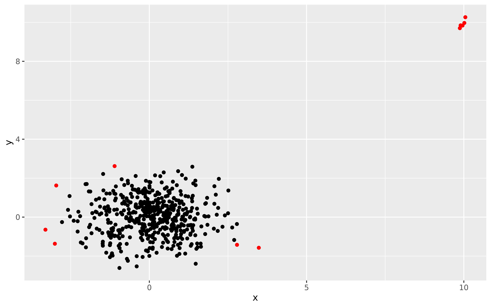

This function identifies outliers using the algorithm lookout, an outlier detection method that uses leave-one-out kernel density estimates and generalized Pareto distributions to find outliers.
Usage
lookout(
X,
alpha = 0.01,
beta = 0.9,
gamma = 0.98,
bw = NULL,
gpd = NULL,
scale = TRUE,
fast = NROW(X) > 10000,
old_version = FALSE
)Arguments
- X
The numerical input data in a data.frame, matrix or tibble format.
- alpha
The level of significance. Default is
0.01. So there is a 1/100 chance of any point being falsely classified as an outlier.- beta
The quantile threshold used in the GPD estimation. Default is
0.90. To ensure there is enough data available, values greater than 0.90 are set to 0.90.- gamma
The quantile of the minimum spanning tree edge lengths used to compute the bandwidth. Default is
0.98. Ignored ifbwis provided, and ignored whenold_version = TRUE, where the largest gap between consecutive edge lengths is used instead. See Details.- bw
The support radius of the Epanechnikov kernel, on the scale of the data after any scaling. If
NULL(default), it is computed from the minimum spanning tree of the data as described in Details.- gpd
Generalized Pareto distribution parameters. If
NULL(the default), these are estimated from the data.- scale
If
TRUE(the default), the data are scaled before the bandwidth and density estimates are computed: withmvscale()whenold_version = FALSE, so that the columns are approximately uncorrelated with unit scale, or by scaling each column to the range[0, 1]whenold_version = TRUE.- fast
If
TRUE, each kernel density estimate is a sum over theknearest neighbours of the point only, including the point itself, wherek = min(max(ceiling(n / 200), 100), n, 500)andn = NROW(X); sokis between 100 and 500, and equals 100 whenever100 <= n <= 20000. Wherever more thank - 1other observations lie inside the kernel support, which is typical in the bulk of the data in three or more dimensions, the sum is truncated and the estimate is lower than the exact one. Sparse observations, which are the candidates for outliers, have fewer thankneighbours inside the support and their estimates are unchanged, although the GPD threshold and fit can still differ. IfFALSE, each kernel is summed over exactly the observations inside its support, found with a fixed-radius search (frNN()). The time and memory of this exact computation are proportional to the number of pairs of observations withinbwof each other. In two dimensions this is usually modest, but in three or more dimensions the kernel support in the bulk of the data can contain thousands of observations, so the exact computation is still of ordern^2in the worst case andfast = TRUEremains the practical choice for largen. Default isTRUEwhenNROW(X) > 10000. The bandwidth calculation always uses all of the data.- old_version
If
TRUE, the algorithm of Kandanaarachchi and Hyndman (2022) is used. Default isFALSE, giving the algorithm of Hyndman, Kandanaarachchi and Turner (2026). See Details.
Value
A list with the following components:
dataThe input data
X, before any scaling.outliersThe set of outliers.
outlier_probabilityThe GPD probability of the data.
outlier_scoresThe outlier scores of the data.
bandwidthThe support radius of the Epanechnikov kernel: either
bw, or the value computed from the minimum spanning tree multiplied bysqrt(NCOL(X) + 4).kdeThe kernel density estimate values.
lookdeThe leave-one-out kde values.
gpdThe fitted GPD parameters.
callThe matched call.
Details
The algorithm has three steps.
Scaling. When scale = TRUE, the data are first scaled with
mvscale(): each column is centred at its median, and the data
are rotated and scaled using the Cholesky factor of the inverse of a robust
(MCD) covariance estimate, so that the columns are approximately
uncorrelated with unit scale.
Leave-one-out density estimates. A kernel density estimate is
computed at each observation using a spherically symmetric Epanechnikov
kernel with support radius bw, and the contribution of the
observation itself is then removed to give a leave-one-out estimate. When
bw = NULL, the bandwidth is computed from the Euclidean minimum
spanning tree of the (scaled) data by find_tda_bw(): the
gamma quantile (type 8) of the tree's edge lengths is multiplied by
sqrt(m + 4), where m = NCOL(X). A spherically symmetric
Epanechnikov kernel with support radius h in m dimensions has
standard deviation h / sqrt(m + 4) in each coordinate, so this
scaling makes the kernel's per-coordinate standard deviation equal to the
quantile. When fast = TRUE, each kernel is summed over the k
nearest neighbours of the point only; see the fast argument.
Extreme value model. The negative logarithms of the density
estimates (the surprisals) above their beta quantile are modelled
with a generalized Pareto distribution (GPD), fitted by maximum likelihood
using fpot(). Because the surprisals are bounded, the
shape parameter is constrained to be at most zero: if the unconstrained
estimate is positive, the GPD is refitted with the shape fixed at zero. The
fitted GPD gives, for each observation, the probability of a leave-one-out
surprisal at least as large as the one observed, multiplied by
1 - beta. Observations whose probability is below alpha are
declared outliers.
Setting old_version = TRUE gives the algorithm of Kandanaarachchi and
Hyndman (2022) instead. It differs in three places: the data are scaled so
that each column lies in [0, 1], rather than with
mvscale(); the bandwidth is the lower end of the largest gap
between consecutive minimum spanning tree edge lengths among those at or
above their median, rather than the gamma quantile, again multiplied
by sqrt(m + 4); and the GPD shape parameter is not constrained.
References
Kandanaarachchi, S, and Hyndman, RJ (2022) Leave-one-out kernel density estimates for outlier detection, J Computational & Graphical Statistics, 31(2), 586-599. https://robjhyndman.com/publications/lookout/.
Hyndman, RJ, Kandanaarachchi, S, and Turner, K (2026) Lookout 2: Anomaly detection via leave-one-out kernel density estimation, arXiv:2603.22636. https://robjhyndman.com/publications/lookout2.html
Examples
X <- rbind(
data.frame(
x = rnorm(500),
y = rnorm(500)
),
data.frame(
x = rnorm(5, mean = 10, sd = 0.2),
y = rnorm(5, mean = 10, sd = 0.2)
)
)
lo <- lookout(X)
lo
#> Leave-out-out KDE outliers using lookout algorithm
#>
#> Call: lookout(X = X)
#>
#> Outliers Probability
#> 1 78 0.0021870275
#> 2 128 0.0006773301
#> 3 219 0.0086577418
#> 4 221 0.0000000000
#> 5 305 0.0066487886
#> 6 435 0.0036292648
#> 7 501 0.0059291894
#> 8 502 0.0052703980
#> 9 503 0.0059618874
#> 10 504 0.0043944614
#> 11 505 0.0059026768
#>
autoplot(lo)
